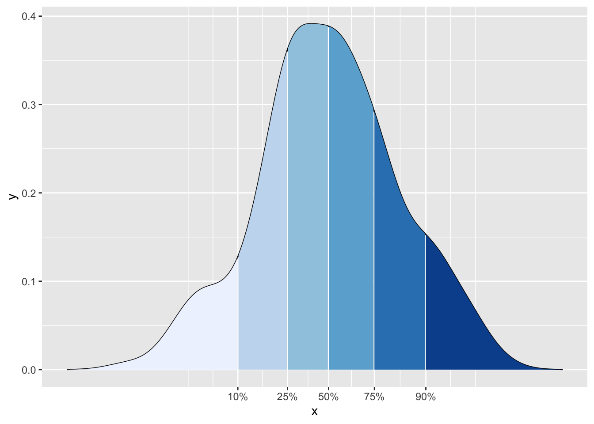
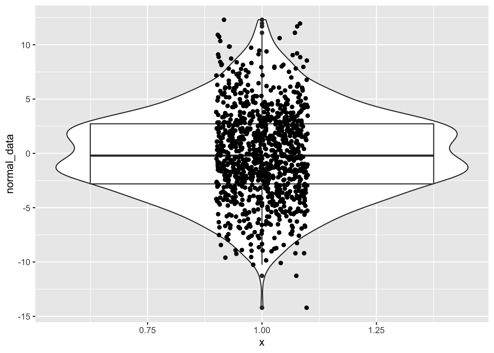
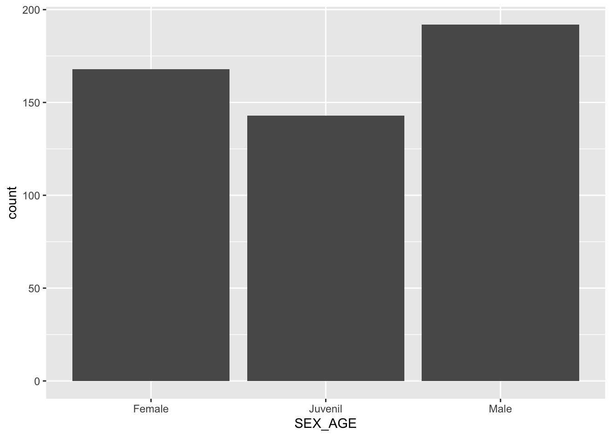
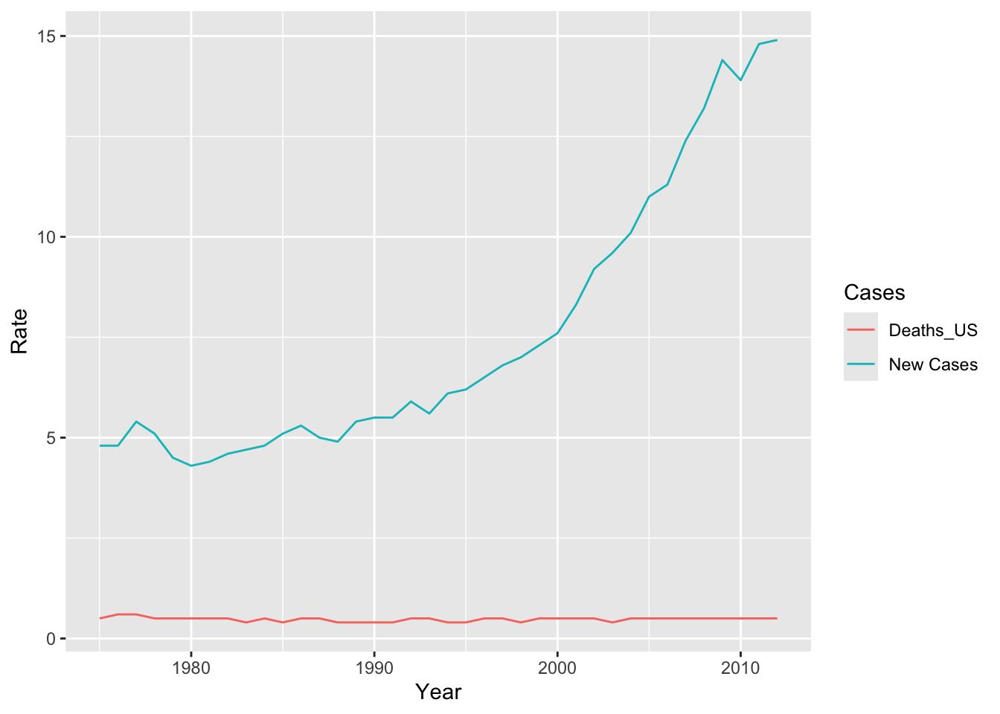

Chapter 17 Generalized Linear Models
if (!require("pacman")) install.packages("pacman")
pacman::p_load(tidyverse, huxtable, wakefield, SuppDists,univariateML)
library(tidyverse)
library(huxtable)
library(wakefield)
library(SuppDists)
library(univariateML)
conflicts_prefer(lubridate::minute)## [conflicted] Removing existing preference.
## [conflicted] Will prefer lubridate::minute over any other package.17.1 Linear models
Generalized linear models, GLM, are an extension of linear models where the dependent variable has a normal distribution. We remember that in a linear regression the dependent variable follows the model \(y_i = \beta_0 + \beta_1 x_i\), where \(\beta_0\) is the intercept and the \(\beta_1\) is the coefficient, that is, the slope and the \(x_i\) are the values of x’s. One of the assumptions is that the variation in the values of \(\mu_i\), which are the \(y_i\), have a normal distribution in each x’s and that there is homogeneity of variance.
\[\mu_i=\beta_0+\beta_1x_i\] An important assumption is the assumption that the variation in the \(y_i\) are normally distributed and that there is homogeneity of variance.
\[y_i\sim N\left(\mu_i,\ \epsilon\right)\] We can visualize it with the following figure, where the values of y’s have a normal distribution and that this distribution is homogeneous across the values of x’s.
17.2 Necesito cambiar este gráfico, ya que viene del web (del siguiente website “https://towardsdatascience.com”).
17.3 When the dependent variable is not linear
The main problem for a long time has been that the dependent variable does not have a normal distribution and consequently did not meet the assumptions of linear regression. The method of linearizing the response variable was developed by Nelder and Wedderburn 1972. Information about the test and its evolution of GLM can be found at https://encyclopediaofmath.org/wiki/Generalized_linear_models. With the advancement of the use of computers in the 80s, it ended up being one of the most used statistical methods.
The term GLM refers to a wide variety of regression models. The assumption in these models is that the response variable \(y_i\) follows a distribution within the family of exponential distributions with an average \(\mu_i\), where a function \(\mu_i^T\beta\) is assumed that is frequently non-linear . To linearize the variable it is necessary to use a “link” to convert the dependent variable, \(y_i\).
17.4 Link available
Here I show a partial list of the different types of “links” for different types of data (or distributions) of the independent variable, \(y_i\). The decision of which transformation or link to use is necessary will depend on the data types and their distribution. This is only a subset of avaliable link functions.
| Modelo | Variable_Dep | Link | Variables_Independiente |
|---|---|---|---|
| Linear regressionl | Normal | Identidy | Continuous |
| ANOVA | Normal | Identity | Categorical |
| Logistic Regression | Binomial | Logit | Mix |
| Poisson Regression | Poisson | Log | Mix |
Although the previous distributions are very common, they are not the only links available to transform the data. Here is supplementary information on some other R links that are available in certain packages.
https://www.rdocumentation.org/packages/stats/versions/3.6.2/topics/family
| Familia | Links |
|---|---|
| Gaussian/Normal | identity, log, inverse |
| Binomial | logit, probit, cauchit, log, cloglog |
| Gamma | inverse, identity, log |
| Poisson | log, identity, square root |
| Inverse Gausian | 1/µ^2, inverse, identity, log |
17.5 The assumptions
- The advantage is that now the dependent variable does not have to have a normal distribution.
- Furthermore, untransformed data does not have to have a linear relationship. However, the data must come from a distribution of the exponential family, for example, binomial, Poisson, multinomial, normal, inverse normal, etc.
- GLM does not assume a linear relationship between the dependent and independent variable, but assumes a linear relationship of the transformed dependent variable data and the independent variable. Consequently, a linear relationship is assumed between the binary variable and the explanatory variable after using the transformation with the link, \(logit\left(\pi\right)=\beta_0+\beta_1\cdot x_i\).
- The assumption of homogeneity of variance does not have to be taken into account.
- The errors have to be independent but it does not matter if they comply with a normal distribution.
17.6 The advantages of GLM
- The parameters are estimated using likelihood (MLE = Maximum Likelihood estimators), not least squares (OLS = ordinary least square). The models are estimated via likelihood, then they optimize the estimators, \(\beta\).
- There is no need to transform the data of the dependent variable to normalize them.
- The selection of the “link” is independent of the dependent variable(s), which makes it easier to create models.
- Tools to evaluate inferences and models are available such as evaluating residuals, confidence intervals, deviation, likelihood ratio test among others.
17.7 ## Binomial or Bernoulli models
If the variable is binomial, there are only two alternatives, 0 and 1, or whether or not, dead or alive, the binomial distribution is used. The logit function is used as a link function and the binomial/Bernoulli distribution as a probability distribution, the model is called Logistic Regression.
\[\log\frac{q_i}{1-q_i}=\beta_0+\beta_1X_i\] where the distribution is a binomial with \(y_i\sim Binomial\left(q_i\right)\).
#library(wakefield)
x=r_sample_binary(50, x = 0:1, prob =c(0.3, 0.7), name = "Binary")
#x
df=as.data.frame(as.factor(x))
#df
ggplot(df, aes(x))+
geom_histogram(fill="blue")+
scale_x_continuous(breaks = c(0, 1))+
xlab("Binary Values")
17.7.1 Gamma Distribution
The gamma distribution is frequently used to take into account variables that have very long and large tails (Heavy-Tailed distributions). The distribution is widely used in the area of econometrics and survival estimates.
The gamma distribution can be parameterized with a “shape term \(\alpha = k\) and the inverse of a scale parameter \(\beta=1/\theta\) which is known as a * parameter *rate**.
\[f\left(x\right)=\frac{\left(\beta^{\alpha}\cdot x^{\alpha-1}e^{-\beta x}\right)}{\Gamma\left(\alpha\right)}\ para\ x>0,\ \ \alpha,\ \beta>0\]
where \(\Gamma\left(\alpha\right)\) is the gamma function. For each integer value \(\Gamma\left(\alpha\right)=\left(\alpha-1\right)!\)
In another word, the gamma distribution is for modeling continuous variables that are always positive and have skewed distributions.
Examples where the gamma distribution is used
- the time until the moment of failure of a team
- the time until the death of individuals
- the amount of water accumulated in a lake
- the size of unpaid loans
Let’s look at some gamma distributions
x = 0:20
curve(dgamma(x, shape=1, scale=2), xlab = "x", ylab = "f(x;k,theta)", 0.4, 20, col = 3, lwd = 3,
main = "Examples of Gamma Distributions")
curve(dgamma(x, shape=2, scale=2), xlab = "x", ylab = "f(x;k,theta)", 0.4, 20, col = 5, lwd = 3,
add = TRUE)
curve(dgamma(x, shape=2, scale=4), xlab = "x", ylab = "f(x;k,theta)", 0.4, 20, col = 6, lwd = 3,
add = TRUE)
curve(dgamma(x,shape =5, scale=1), xlab = "x", ylab = "f(x;k,theta)", 0.4, 20, col = 7, lwd = 3,
add = TRUE)
curve(dgamma(x, shape=9, scale=0.5), xlab = "x", ylab = "f(x;k,theta)", 0.4, 20, col = 1, lwd = 3,
add = TRUE)
curve(dgamma(x, shape=7.5, scale=1), xlab = "x", ylab = "f(x;k,theta)", 0.4, 20, col = 2, lwd = 3,
add = TRUE)
legend("topright", c("k=1,theta=2", "k=2,theta=2", "k=2,theta=4","k=5,theta=1","k=9,theta=0.5", "k=7.5,theta=1.0"), col = c(3, 5,6, 7,1,2), lwd = 3, inset = 0.05)
17.8 The basic parameters of the gamma.
Note: The scale is a dispersion index, and the higher the number, the longer the tail.
The average is equal to the multiplication of shape=k by scale = theta, \[average=k\cdot\theta\].
The variance is equal to the multiplication of shape=k by scale = (theta)^2, \[variance=k\cdot\theta^2\]
You can find the formulas to calculate other parameters on the Wikipedia page.
https://en.wikipedia.org/wiki/Gamma_distribution
17.8.1 La distribución gaussiana inversa
En la teoría de la probabilidad, la distribución gaussiana inversa es una familia de dos parámetros de distribuciones de probabilidad continuas con apoyo en (0, ∞).
La distribución sigue la siguiente forma \[f\left(x;µ,\lambda\right)=\sqrt{\frac{\lambda}{2\pi x^3}}\exp\left(-\frac{\lambda\left(x-µ\right)^2}{2µ^2x}\right)\]
donde \(x>0\), \(µ>0\), y \(\lambda\) es la forma de distribución y siempre es mayor de cero. Mayor es el \(\lambda\) (el shape parameter) más simétrica es la distribución.
Cuando λ tiende al infinito, la distribución gaussiana inversa se parece a una distribución normal (gaussiana). La distribución gaussiana inversa se conoce también como la distribución Wald.
#La distribución se usa cuando la distribución de población donde la distribución lognormal tiene una cola derecha demasiado pesada. Cuando se refiere a cola pesadas en estadistica, se refiere a que hay más probabilidades en esta region que una distribución normal. Por consecuencia las probabilidades en esta region es mayor.
La distribución es utiliza para modelar datos no negativos que son sesgados positivamente. En otra palabra todos los valores son positivos y la cola tiende a disminiur más lentamente que en una distribución normal.
17.8.1.1 Historia gausiana inversa
Información historica sobre la distribución gaussiana inversa es poco limitado. La distribución fue aparentemente derivada por la primera vez por Louis Bachelier en 1900, cuando el trataba de estimar el precio de la bolsa de valores para diferentes companias. Pero el nombre de “Inverse Gaussian” fue sugerido por Maurice Tweedie en 1945. Vea este enlace para más detalles.
https://en.wikipedia.org/wiki/Normal-inverse_Gaussian_distribution
Ejemplos que pudiese ser de este tipo de distribución
- el tiempo que toma llegar a un sitio.
- la distribución de precios de casas
- la cantidad de hijos en una familia
- la supervivencia de organismos (survival data)
Nota
library(SuppDists)
#dinvGauss(x, nu, lambda, log=FALSE)
x = -1:3
curve(dinvGauss(x, nu=.7, lambda=0.2, log=FALSE), xlab = "x", ylab = "f(x;k,theta)", -0.3, 3, col = 3, lwd = 2,
main = "Gráfico distribución Gausiana Inversa")
curve(dinvGauss(x, nu=.7, lambda=1), xlab = "x", ylab = "f(x;k,theta)", -0.3, 3, col = 5, lwd = 2,
add = TRUE)
curve(dinvGauss(x, nu=.7, lambda=3), xlab = "x", ylab = "f(x;k,theta)", -0.3, 3, col = 6, lwd = 2,
add = TRUE)
curve(dinvGauss(x, nu=2, lambda=0.2), xlab = "x", ylab = "f(x;k,theta)", -0.3, 3, col = 7, lwd = 2,
add = TRUE)
curve(dinvGauss(x, nu=2, lambda=1), xlab = "x", ylab = "f(x;k,theta)", -0.3, 3, col = 1, lwd = 2,
add = TRUE)
curve(dinvGauss(x, nu=2, lambda=4), xlab = "x", ylab = "f(x;k,theta)", -0.3, 3, col = 2, lwd = 2,
add = TRUE)
curve(dinvGauss(x, nu=1, lambda=40), xlab = "x", ylab = "f(x;k,theta)", -0.3, 3, col = 4, lwd = 2,
add = TRUE)
legend("topright", c("nu=.7,lambda=0.2", "nu=.7,lambda=1", "nu=.7,lambda=3","nu=2,lambda=0.2","nu=2,lambda=1", "nu=2,lambda=4","nu=1,lambda=40"),
col = c(3, 5,6, 7,1,2,4), lwd = 3, inset = 0.05)
17.8.1.2 Los parámetros de la distribución inversa de Gauss
El promedio se calcula de la siguiente forma
\[E\left[X\right]=\frac{1}{\mu}+\frac{1}{\lambda}\]
La varianza se calcula de la siguiente forma
\[Var\left[X\right]=\frac{1}{\mu\lambda}+\frac{2}{\lambda^2}\]
Para otros parámetros vean este enlace
https://en.wikipedia.org/wiki/Inverse_Gaussian_distribution
17.9 Evaluando distribuciones
Evaluar un conjunto de datos para visualizar la distribución.
Si necesita hacer análisis de regresión con datos que tienen una distribución gaussiana inversa el siguiente paquete esta disponible invGauss y si quiere determinar cual es la mejor distribución para sus datos con el paquete univariateML hay unas funciones para ayudar a determinar.
Entre tanto que desarollo este tema más profundo le suguiero este enlace.
https://www.cienciadedatos.net/documentos/55_ajuste_distribuciones_con_r.html
## Loading required package: survival##
## Attaching package: 'survival'## The following object is masked from 'package:boot':
##
## amllibrary(univariateML)
data(d.oropha.rec)
#d.oropha.rec
ggplot(data = d.oropha.rec) +
geom_histogram(aes(x = time, y = after_stat(density)),
bins = 40,
alpha = 0.3, color = "black") +
geom_rug(aes(x = time)) +
stat_function(fun = function(.x){dml(x = .x, obj = mlnorm(d.oropha.rec$time))},
aes(color = "normal"),
size = 1) +
stat_function(fun = function(.x){dml(x = .x, obj = mlinvgauss(d.oropha.rec$time))},
aes(color = "inverse-normal"),
size = 1) +
scale_color_manual(breaks = c("normal", "inverse-normal"),
values = c("normal" = "red", "inverse-normal" = "blue")) +
labs(title = "Distribución de tiempo de dessarrolo",
color = "Distribución") +
theme_bw() +
theme(legend.position = "bottom")## Warning in stat_function(fun = function(.x) {: All aesthetics have length 1, but the data has 192 rows.
## ℹ Please consider using `annotate()` or provide this layer with data containing a single row.## Warning in stat_function(fun = function(.x) {: All aesthetics have length 1, but the data has 192 rows.
## ℹ Please consider using `annotate()` or provide this layer with data containing a single row.
Ejemplo de los precios de diamantes del paquete ggplot2
#library(univariateML)
ggplot(data = diamonds) +
geom_histogram(aes(x = price, y = after_stat(density)),
bins = 40,
alpha = 0.3, color = "black") +
geom_rug(aes(x = price)) +
stat_function(fun = function(.x){dml(x = .x, obj = mllnorm(diamonds$price))},
aes(color = "log-normal"),
size = 1) +
stat_function(fun = function(.x){dml(x = .x, obj = mlinvgauss(diamonds$price))},
aes(color = "inverse-normal"),
size = 1) +
scale_color_manual(breaks = c("log-normal", "inverse-normal"),
values = c("log-normal" = "red", "inverse-normal" = "blue")) +
labs(title = "Distribución precio diamantes",
color = "Distribución") +
theme_bw() +
theme(legend.position = "bottom")## Warning in stat_function(fun = function(.x) {: All aesthetics have length 1, but the data has 53940 rows.
## ℹ Please consider using `annotate()` or provide this layer with data containing a single row.## Warning in stat_function(fun = function(.x) {: All aesthetics have length 1, but the data has 53940 rows.
## ℹ Please consider using `annotate()` or provide this layer with data containing a single row.